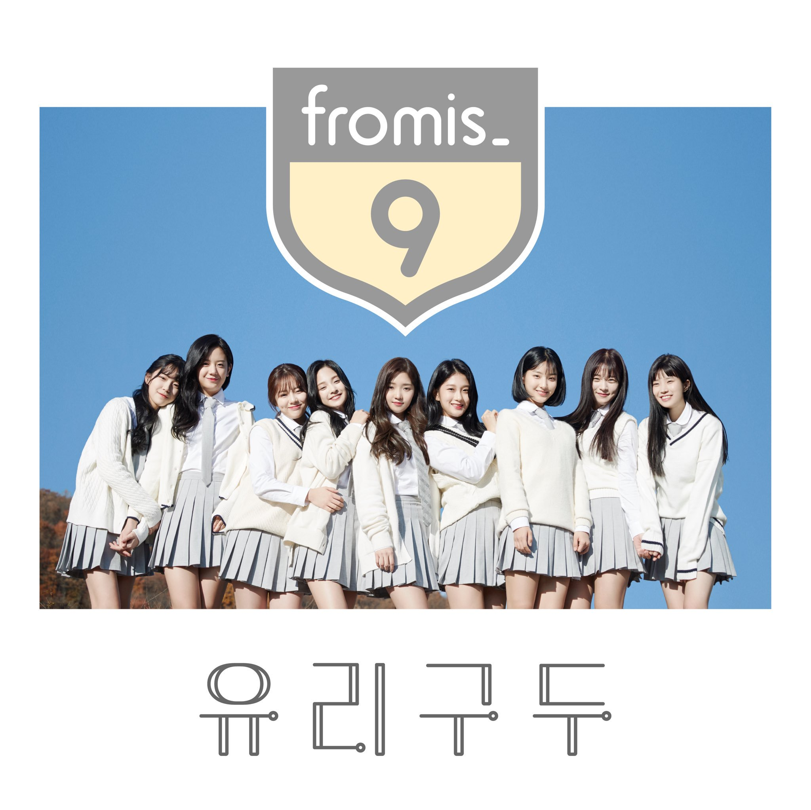
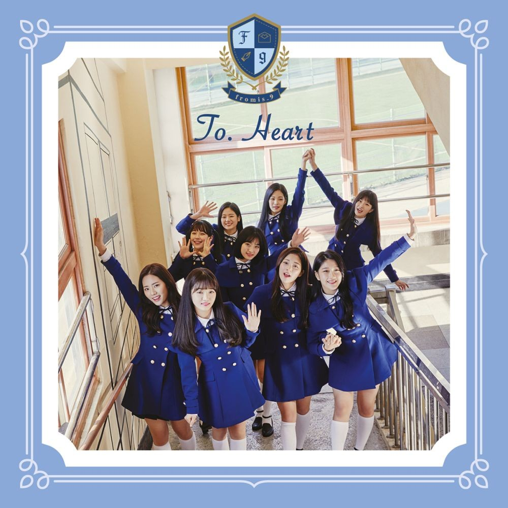
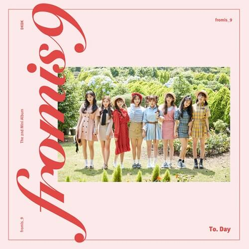
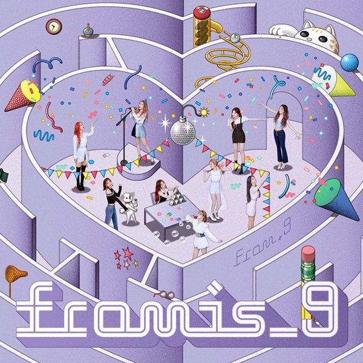
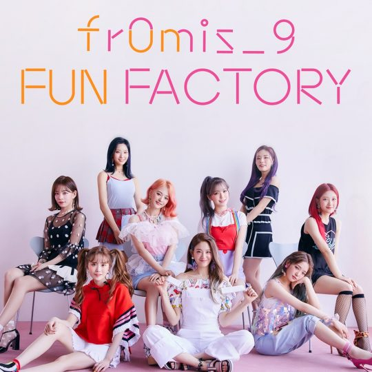

대한민국의 9인조 걸그룹. 소속사는 CJ ENM 산하 레이블인 오프더레코드 엔터테인먼트이다. 엠넷에서 방영했던 서바이벌 오디션 프로그램 아이돌학교의 참가자들 중 최종 득표수 기준 상위 9명을 선발해 결성되었다. 서바이벌 프로그램을 통해 결성된 그룹이고 또 그 프로그램이 프로듀스 101 시리즈의 영향을 많이 받은 프로그램이라 프로듀스 시리즈에서 탄생되는 그룹들처럼 활동 시한이 정해진 프로젝트 그룹이라고 오해하는 경우가 종종 있다. 그러나 아이돌학교는 따로 소속사가 없는 개인 연습생, 지망생들을 대상으로 시작한 프로그램이었기 때문에[8] 이 프로를 통해 데뷔한 fromis_9은 프로젝트성 아이돌 그룹이 아니라 다른 연예기획사들에서 내놓는 아이돌 그룹들과 마찬가지로 활동 종료 시한이 따로 정해지지 않은 오프더레코드 엔터테인먼트 소속 정규 걸그룹이다.[9][10] 다른 엠넷 서바이벌 프로그램인 프로듀스 시리즈 출신 아이돌 그룹인 I.O.I-Wanna One-IZ*ONE과 비교해 봤을 때 가장 눈에 띄는 차이점이라 할 수 있을 것이다. 2017년 11월 29일 일본 요코하마에서 열린 엠넷 아시안 뮤직어워드에서 첫 프리데뷔 무대를 선보인 것을 시작으로 활동 중에 있다.
| 디지털싱글 | 미니1집 | 미니2집 | 스페셜싱글 | 싱글 1집 |
|  |  |  |  |  |